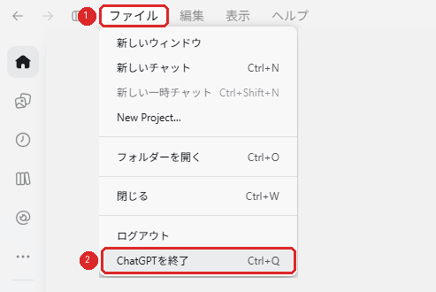
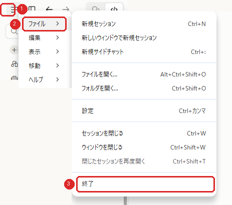

AI通知ランプ 説明書
AI（Claude Code・Codex）の作業の様子を、USBランプの色で知らせます。対応：Windows 10 / 11・Mac（USB-C が使えるもの）・Claude Code / Codex
光り方
| ランプ | 意味 | あなたは |
|---|---|---|
| 青（ゆっくり明るくなったり暗くなったり） | AI が作業中 | 待っていて大丈夫 |
| 緑（点灯） | 作業が終わった | 結果を見に行く |
| 橙（点滅） | あなたの出番：許可を求めている／選択肢の質問が出ている／エラーで止まった | 画面を見て操作する（操作しないと先に進みません） |
色は 3 つだけです。「青＝待つ、緑＝見に行く、橙＝操作する」と覚えてください。
AI が返事の文章の中で質問してきたとき（「どうしますか？」など）は、返事が終わった扱いなので緑になります。
USB に挿した直後は、虹色が流れます（正常に動いている合図です）。
光り方は変えられます：AI に「AI通知ランプの作業中の色を紫にして」「ランプをもっと暗くして」「完了を白の点灯にして」のように頼むと、色・光り方（点灯／ゆっくり明るくなったり暗くなったり／点滅）・明るさを変えられます。「光り方を元に戻して」と頼めば、いつもの色に戻ります。
ほかにも、AI に頼むと次のことができます。
- 夜は自動で暗く：「夜10時から朝7時はランプを暗くして」
- 終わったときにお祝い：「作業が終わったら虹色でお祝いして」
- 長い作業の目安：「作業が10分を超えたら紫に変えて」
- AI ごとに色を分ける：「Codex の作業中はピンクにして」
- おまかせセット：「やさしい光り方にして」「派手にして」「夜用にして」「集中モードにして」
- 虹色・速い点滅：「作業中を虹色の速い点滅にして」
ランプを消すには
- ランプの先の「タッチ」（光る所のまわり）に触れる：どの色でも消えます（設定は消えません。作業中に消した場合は、作業が終わると緑が点きます）。
- 次の作業を頼む：作業中（青）の表示に切り替わります。
- 既読で消える機能（おすすめ）：AI の画面を触るだけで消えます。下の「既読で消える機能」を参照してください。
時間がたっても自動では消えません。席を外していても、戻ったときに気づけます。
入れ方
使っている AI（Claude Code または Codex）に、設定を代わりにやってもらいます。Windows でも Mac でも、AI に送る文は同じです。Python など、ほかのソフトを入れる必要はありません。
- ランプをパソコンの USB に挿します（虹色が流れれば準備OK）。
Mac の場合：はじめて挿すと「アクセサリの接続を許可しますか？ AI Lamp をこの Mac に接続しますか？」と表示されます。「許可」を押してください。「許可しない」を押すと、ランプと通信できません（押してしまったときは、ランプを抜いて挿し直すと、もう一度表示されることがあります）。 - Claude Code（または Codex）に、次の文をそのまま打って送ります（コピーして貼っても大丈夫です）。
AI通知ランプを設定して。手順は github.com/kisimenn/ai-lamp の README のとおりに。
コピーして貼れる場合は（リベシティのメッセージでお送りする文です）、次の文を貼ると、AI がより確実に進めます。AI通知ランプを設定してください。手順は https://github.com/kisimenn/ai-lamp の README のとおりにお願いします。 ・README のコマンドだけを使い、自分でスクリプトを書いたり設定を手で書き換えたりしないでください ・実行できないときは、実行ボタン付きの形で私に頼んでください ・最後に、アプリの開き直し（Codex はフックの承認も）を、見本の画像を開いて案内してください
AI が手順書（README）を読み、設定ファイルをダウンロードして中身を確認してから、設定します。
途中で「ネットにつないでいいですか？」「入れていいですか？」などと聞かれたら、「はい」と答えてください。「既読で消える機能を使いますか？」とも聞かれます。おすすめは「使う」です（使わないと、ランプを消す方法はタッチに触れることだけになります。下の「既読で消える機能」を参照）。
設定の最後に、確認のためランプが緑に 2 秒光ります。ランプを見ていて、AI に「光りましたか？」と聞かれたら答えてください（光らなかったら、別の USB の口に挿し直すと光ることがあります）。 - AI に「自分で実行してください」と言われたら、AI が表示した実行ボタンを押すか、表示されたコマンドをそのまま実行してください。使っている AI の安全の設定によっては、ダウンロードしたものを AI が自分では実行できないことがあります（そのときだけで、ふつうは AI が最後まで進めます）。
- AI が設定を終えたら、設定したアプリを終了して、開き直します（Claude Code が入っていない場合は、Claude の開き直しは不要です）。開き直したら、設定の会話に戻って「開き直した」と送ってください。AI が続きを案内します。
- Codex アプリ：右上の × では裏で動き続けることがあるので、画面上のメニューの「ファイル」→「ChatGPT を終了」で終了します（Codex のアプリでも、メニューには「ChatGPT」と表示されます）。

- Claude アプリ：右上の × では裏で動き続けることがあるので、左上の「≡」→「ファイル」→「終了」で終了してから、開き直します。

- Codex アプリ：右上の × では裏で動き続けることがあるので、画面上のメニューの「ファイル」→「ChatGPT を終了」で終了します（Codex のアプリでも、メニューには「ChatGPT」と表示されます）。
- Codex を使う場合だけ：ランプのフックを承認（許可）します。入力欄の下に出る、黄色い点付きのフックのアイコンを押します（となりに出る文字は、Codex の設定によって変わります）。

入力欄の下に出る、黄色い点付きのフックのアイコンを押します。 lamp-hookまたはlamp.ps1（Mac はlamp.pl）と書かれたランプ用のフックを許可します。並んでいるのが全部ランプ用なら「すべて許可」、ほかのフックも並んでいるときはランプ用だけ選んで「選択した項目を許可」を押します。これで承認は完了です。設定画面でもう一度同じ操作をする必要はありません。
アイコンが出ていないときは、すでに承認済みのこともあります。「設定 → Hooks」を開くと、承認済みかどうかを確かめたり、そこから承認したりできます。ターミナルの Codex は入力欄に/hooksと打つと出てきます。
※設定をやり直す（setup をもう一度実行する）と、もう一度承認が必要になることがあります。 - 新しい会話で「こんにちは」と送ってください。送ったあとに青、返事が終わると緑に光れば完了です（返事が早いと、青は一瞬で緑に変わります）。10 秒たっても光らなかったら、設定の会話に戻って AI に伝えてください。
（設定の最後に緑が 2 秒光るのは「ランプが見つかった」という確認です。AI と連動して光るかどうかは、この手順 6 で確かめます。）
https://github.com/kisimenn/ai-lamp を開き、緑の「Code」→「Download ZIP」で設定ファイルを取って展開します。中の setup.ps1 を右クリック →「PowerShell で実行」。既読で消える機能も使う場合は、PowerShell で
powershell -ExecutionPolicy Bypass -File setup.ps1 -Watch と打ちます。Mac の場合：ターミナルで、展開したフォルダに移動して
bash setup.sh と打ちます。setup.ps1（Mac は setup.sh）が何をするかは、ファイルの先頭に日本語で書いてあります。
使える AI
| AI | 使える？ |
|---|---|
| Claude Code（デスクトップアプリ・ターミナル・VS Code） | 使えます |
| Codex（アプリ・ターミナル・VS Code） | 使えます（橙になるのは、許可を求められたときだけです） |
| クラウドで動かす版（Web 版の Claude Code、Codex のクラウド） | 使えません（パソコンの USB に届かないため） |
Claude と Codex を同時に使っても、1つのランプにまとめて表示します（あなたの出番（橙）＞作業中（青）＞完了（緑）の順に優先）。
既読で消える機能（おすすめ）
LINE の「既読」と同じ考え方で、AI の画面を見たら「読んだ」とみなしてランプを消す機能です。ランプが緑か橙に点いたあとに、AI のアプリ（Claude または Codex）を前に出して、マウスかキーボードを触るとランプが消える機能です。目の動きを読み取るわけではありません。作業中の青は、この機能では消えません。使いたい方だけオンにしてください。
・いちばん前にあるアプリの名前（Claude・Codex かどうか）
・最後にマウスかキーボードを触った時刻
押したキーの中身や、画面の内容は見ません・記録しません・送信しません。
中身は
plugins\ai-lamp\scripts\lamp-watch.ps1 で、誰でも読める文字で書かれています。
オンにする：AI（Claude Code または Codex）に「AI通知ランプの既読で消える機能をオンにして」と頼みます（中身は plugins\ai-lamp\scripts\watch-install.ps1）。パソコンを起動するたびに、自動で動くようになります。
オフにする：同じように「オフにして」と頼みます（watch-uninstall.ps1）。オフにすると、緑・橙を消す方法はランプの先のタッチに触れることだけになります。
Mac の場合：Mac 版のこの機能は試験中です。オンにすると、Mac の画面に「バックグラウンド項目が追加されました」と出ることがあります。ランプの機能なので、そのままで大丈夫です（中身は plugins/ai-lamp-mac/scripts/lamp-watch.pl）。
VS Code やターミナルで AI を使っている場合は、追加の設定が必要です。AI に「VS Code（またはターミナル）でも既読で消えるようにして」と頼んでください。
困ったとき
まずは AI（Claude Code または Codex）に 「AI通知ランプの設定を確認して」 と頼んでください。原因を調べてくれます。
| こんなとき | 確かめること |
|---|---|
| AI が「設定ファイルをダウンロードできない」と言う | AI が「ネットにつないでいいですか？」と聞いてきたら、許可してください。それでもダウンロードできないとき（会社のネットワークで GitHub が使えない、など）は、リベシティのメッセージでご連絡ください。 |
| AI が設定の途中で「自分で実行してください」と言って止まった | AI が表示した実行ボタンを押すか、表示されたコマンドをそのまま実行してください（入れ方の手順 3）。 |
| まったく光らない | USB を挿し直して、虹色が流れるか見てください。流れなければ、ケーブルを別のもの（データ通信できるもの）に替えてください。 |
| 虹色は流れるが、作業しても変わらない | 入れ方の手順 4（アプリを終了して開き直す）をしたか確認してください。Codex の場合は手順 5（フックの承認）と、承認したあと新しい会話にしたかも確認してください。 |
| 途中から変わらなくなった | 数秒待つと、ランプが自分で立ち直ることがあります。戻らなければ USB を挿し直してください。ほかのソフト（Arduino IDE など）がランプを使っていないかも確認してください。同時に使うことはできません。 |
| ずっと青のまま | AI が止まっている可能性があります。ランプの先のタッチに触れるか、次の作業を頼むと戻ります。 |
| 青が点くまで時間がかかる | パソコンの混み具合によって、数秒〜十数秒遅れることがあります。AI に「AI通知ランプの記録（events.log）を見て、遅れの原因を調べて」と頼むと、どこで時間がかかったかを調べられます。 |
取り外し方
AI に「AI通知ランプの uninstall.ps1 を実行して、ランプの設定を外して」と頼むか、
設定ファイル（上の「自分で設定したい場合」と同じ方法で取れます）の uninstall.ps1 を右クリック →「PowerShell で実行」します。Mac では、展開したフォルダで bash uninstall.sh を実行します。
Claude Code のプラグイン、Codex の設定、既読で消える機能、ランプの記録がすべて外れます。最後に、使っているアプリを終了して開き直してください。
ご注意
- このランプは、AI の作業の状態を光で知らせるものです。AI の動作そのものには影響しません。ランプを外していても、AI は普通に使えます。
- 本製品は Anthropic 社・OpenAI 社の公式製品ではありません。「Claude」「Claude Code」は Anthropic 社の、「Codex」は OpenAI 社の商標です。